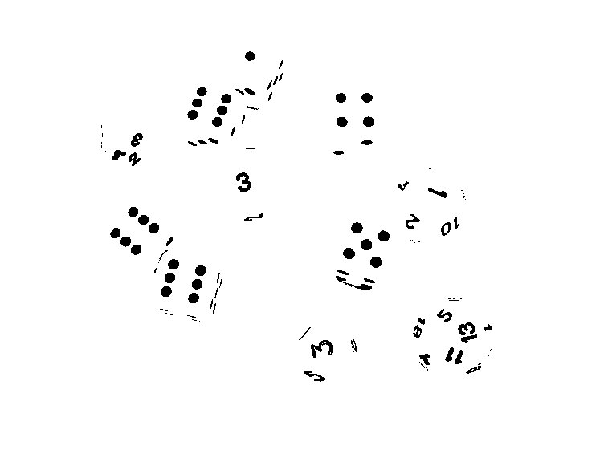
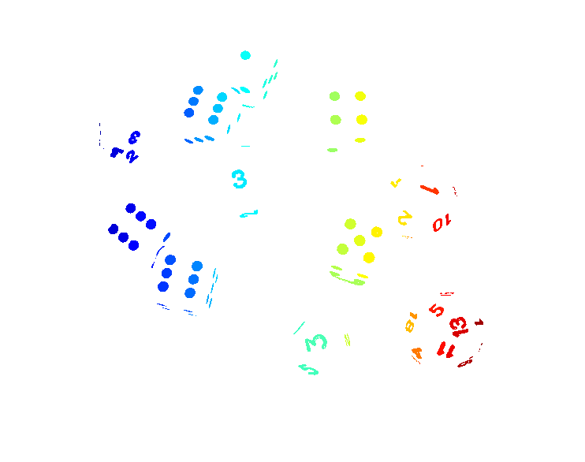
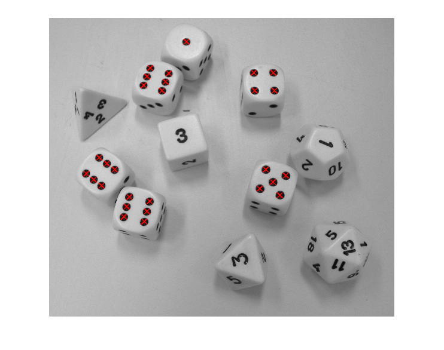

Contents
Funciones de segmentación
% Partimos de la misma imagen que antes. img=imread('291.jpg'); img=rgb2gray(img); imshow(img);
Warning: Image is too big to fit on screen; displaying at 33%

Binarizamos la imagen
imgbw=im2bw(img,90/255); imshow(imgbw);
Warning: Image is too big to fit on screen; displaying at 33%

Etiquetamos la imagen
Se parte de la imagen binarizada y se usa una vecindad a 8 Como los objetos de interés son los puntos, invertimos la imagen
[imgL,numobj] = bwlabel(~imgbw,8); imshow(label2rgb(imgL))
Warning: Image is too big to fit on screen; displaying at 33%

Calculamos las características de los objetos
datos_obj = regionprops(imgL,'all')
datos_obj =
152x1 struct array with fields:
Area
Centroid
BoundingBox
SubarrayIdx
MajorAxisLength
MinorAxisLength
Eccentricity
Orientation
ConvexHull
ConvexImage
ConvexArea
Image
FilledImage
FilledArea
EulerNumber
Extrema
EquivDiameter
Solidity
Extent
PixelIdxList
PixelList
Perimeter
Seleccionar los puntos
% El diámetro de los puntos es de aproximadamente 40 pixels. Por ello, un % posible criterio para seleccionar los puntos es que el eje mayor y el eje % menor sean aproximadamente iguales a 40. Se fijara una holgura de +- 7 pixels puntos=find(abs([datos_obj(:).MajorAxisLength]-40)<7 & abs([datos_obj(:).MinorAxisLength]-40)<7); % En la variable puntos queda almacenado el número de los objetos que cumplen la % condición fijada. Usaremos esta información para marcar los centros. centros=reshape([datos_obj(puntos).Centroid],2,length(puntos))'; imshow(img); hold on; axis ij; plot(centros(:,1),centros(:,2),'rx','LineWidth',2,'MarkerSize',10); hold off
Warning: Image is too big to fit on screen; displaying at 33%
